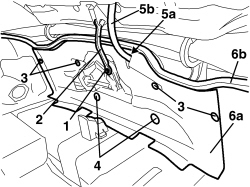

7040C13 HOOD HOUSING COMPARTMENT REAR TRIM - R.R.
- Path
- Procedures > 70 FITTINGS > 7040 BODY INTERIOR FITTINGS AND TRIM > 7040C HOOD HOUSING COMPARTMENT TRIM - R.R. > 7040C13 HOOD HOUSING COMPARTMENT REAR TRIM - R.R.
- Kind
- repair procedure (removal / refitting; the operation number is the code)
- Applies to
- engines: 2.2 JTS, 3.2 JTS; all production periods
- Interactive page
- https://sloeber94.github.io/elrnDB-aBrrSpdr/en/#/946004122
Applies to: engines: 2.2 JTS, 3.2 JTS; all production periods
 Removing
Removing
 Refitting
Refitting- Prepare the hood for the operation.
Op. 0010T79 HOOD HYDRAULIC SYSTEM - DISCHARGE AND RESTORE PRESSURE
Op. 7040C11 HOOD HOUSING COMPARTMENT FLOOR TRIM - R.R.
1. Undo the rod fixing nut and keep the spacer.
2. Disconnect the lower end of the rod from the mechanism.
3. Release the retaining buttons using the special tool.
Tool | Description | Function | Validity |
|---|---|---|---|
1823015000 | Knife | Retainer removal |
4. Undo the plastic nuts.
5. Cut the trim in the dotted area (5a) (until it can be released from the the electrical wiring (5b)).
6. Remove the rear trim (6a) releasing it from the perimeter seal (6b).

Applies to: engines: 2.2 JTS, 3.2 JTS; all production periods
Refitting
Removing- Check that the rear trim is not damaged.
- Position the rear trim.
- Apply adhesive tape to the back of the cut area of the trim.
- Attach the rear trim to the perimeter seal.
- Tighten the plastic nuts.
- Attach the retaining buttons.
- Connect the lower end of the rod to the mechanism, then fit the spacer and tighten the rod fixing nut .
- If discharged, restore the hood hydraulic system pressure.
Op. 7030H03 HOOD MANUAL OPENING FOLLOWING DEACTIVATION OF HYDRAULIC SYSTEM - CARRY OUT PROCEDURE
Topics linked from this page (3)
- 0010T79 HOOD HYDRAULIC SYSTEM - DISCHARGE AND RESTORE PRESSURE
- 7030H03 HOOD MANUAL OPENING FOLLOWING DEACTIVATION OF HYDRAULIC SYSTEM - CARRY OUT PROCEDURE
- 7040C11 HOOD HOUSING COMPARTMENT FLOOR TRIM - R.R.
Topics that link to this page (7)
- 7025D22 HOOD HOUSING COMPARTMENT COVER OPENING CONTROL, LEFT AND RIGHT - R.R.
- 7030H14 HOOD - R.R.
- 7030H69 HOOD COMPARTMENT COVER HYDRAULIC ACTUATOR SUPPORT - R.R.
- 7030H70 HOOD COMPARTMENT COVER HYDRAULIC ACTUATOR - R.R.
- 7030H71 HOOD COMPARTMENT COVER HYDRAULIC ACTUATOR SENSORS - R.R.
- 7030H82 PIPE FROM CONTROL UNIT TO HOOD COMPARTMENT COVER HYDRAULIC ACTUATOR (HOOD EXTENSION MOVEMENT) - R.R.
- 7030H84 PIPE FROM CONTROL UNIT TO HOOD COMPARTMENT COVER HYDRAULIC ACTUATOR (HOOD CONTRACTION MOVEMENT) - R.R.